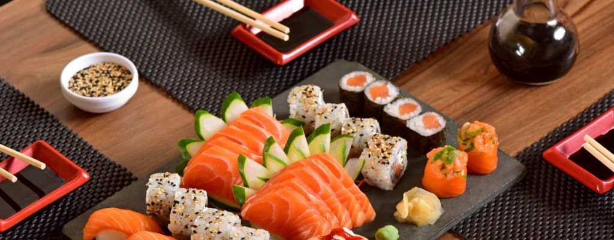
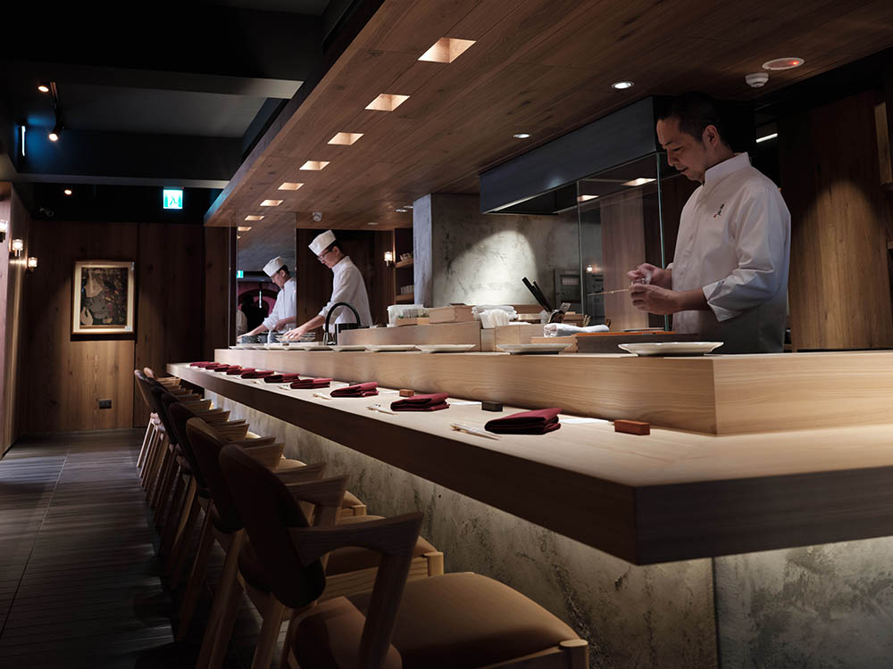

|  | |
米其林指南推薦餐廳位置：1樓 座位數：120人 包廂：共6間，大包廂20位、中包廂14位、小包廂8位 營業時間 午餐 11:30-14:00（最後點餐時間 13:30） 晚餐 18:00-21:30（最後點餐時間 21:00） 包廂容納人數及低消 火焰、肉緣：5-8人，午餐 NT12,000、晚餐 NT15,000 牛香、醇味、：8-14人，午餐NT40,000、晚餐 NT45,000 豪邁：20人，午、晚餐 NT80,000 大廳區半開放式包廂：4-6人，午、晚餐 NT9,000 ※以上價格均包含服務費 訂席專線：02 2345 6780 |
MY HOUSE Japanese Cuisine以嚴選的食材及細膩講究的料理，向來深受老饕推崇。 不僅傳承其經典美味，主廚將牛排料理的精緻技巧融合 中式菜系的深厚廣度，不斷為料理注入新的靈魂，亦在 空間設計、用料、器皿及擺盤更加提升精細質感，讓日 本料理有著精彩時尚的演出方式。菜色部份，除了極具 代表性的牛排、羊排、鴨胸……等料理，邀您入座品嘗。 |
|  | |